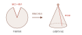

布料是平面的，人體卻有起伏。平面如何服貼於立體？一切要從胸褶說起。
談胸褶，我習慣借一頂派對上的圓錐帽。攤平之後，它不過是一張扇形的紙；把缺口收合，平面便立了起來，成為一個錐形。
胸型平坦時（例如男性），並不需要胸褶——沒有凸起要貼近，便沒有這根褶子存在的理由。
反之，需要在布料上撐出一個貼近胸部的立體空間時，胸褶便登場了。胸部側面與身體之間，呈現一段凸起；胸褶做的事，是把凸起旁多餘的布料盡數收去。收合之後，布料便如派對帽的版型一般，在胸口撐出一個立體的凸起。這正是胸褶最大的功用。而胸圍越大，需要收去的褶份也越大。
在原型版上，這道褶開在腋下——這個位置在打版上有個正式名稱，叫「袖襱」，也就是手臂根部、接袖子的那一圈。
